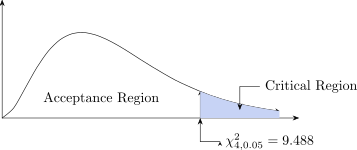
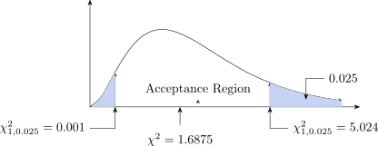

3.3 Test of Independence and Goodness of Fit Test
The \(\chi ^2\) test is used to determine whether there is a significant difference between the observed and
expected frequencies in one or more categories.
Do the number of individuals or objects that fall in each category differ significantly from the number
you would expect? Is there a difference between sampling error or is it test.
\(\chi ^2\) Test
- Quantitative data
- One or more categories
- Independent observations
- Enough sample size (at least 10)
- Simple random sampling
- Data frequencies
\[\text {Test statistic}\hspace {0.4cm} \chi ^2=\frac {\sum (O-E)^1}{E}\]
Where:
\(O-\) Observed
\(E-\) Expected
df - \(n-1\)
\(\chi ^2-\) Statistic.
\(\displaystyle {\chi ^2=\frac {\sum (O-e)^2}{e}}\)
The \(\chi ^2\) - test should be used when the sampling distribution \(\chi ^2\approx \chi ^2_c\) distribution.
The conditions for these are:
- The total frequencies is not less than 50.
- The expected class frequencies are not less 5.
If the second condition is not met it can be improved where \(v=1\) by making an adjacement known as
YATES correction which involves reducing value of \(|O-e|\) by 1/2.
Example
Four coins where tossed 160 times , the results are given below showing the number of heads is this
evidence that this coin is balanced.
| number of heads | 0 | 1 | 2 | 3 | 4 |
| \(O\) | 15 | 46 | 54 | 35 | 10 |
Solution
- Set up the hypothesis
\(H_0: P=1/2\) vs \(H_1:P>1/2\) - Set \(\alpha =0.05\)
-
Test statistic: \(\displaystyle {\chi ^2=\frac {\sum (O-e)^2}{e}}\)
No of Heads \(O\) \(e\) \((O-e)^2\) \(\dfrac {(O-e)^2}{e}\) 0 15 \(160\times P(0)=10\) 1 46 \(160\times P(1)=40\) 2 54 = 60 3 35 = 40 4 10 = 10 4.625 \begin {align*} P(x) &= \begin {pmatrix} n\\4\\ \end {pmatrix} P^x(1-P)^{n-x}\\\\ e(0)=160\times P(0) &=160\times \begin {pmatrix} 4\\0\\ \end {pmatrix} \Big (\frac {1}{2}\Big )^0\Big (\frac {1}{2}\Big )^4=160\times \frac {1}{16}=10\\ \end {align*}
Our statistic is \(\chi ^2=4.625\)
-
Critical Region

Interpretation: Our statistic \(\chi ^2=4.625\) lies in the acceptance region.
We accept \(H_0\) and reject \(H_1\). That is the distribution follows a Binomial with \(P=1/2\), \(n=4\).
\(\therefore \) The coin is balanced, P-value is 0.075
Since the P-value is greater than 0.05 \(\implies \) Accept \(H_0\) and reject \(H_1\).
Example
On a national bases the success rate for the people taking the driving test for the first time is \(40\%\). A
driving instructors records show that for the 50 pupils of his who took the test for the first time last
year 25 passed.
Does his success rate differ from the national success rate?
Solution
- Set up the hypothesis
\(H_0: P=0.40\)
\(H_1: P\neq 0.40\) - Set up level of significance \(\alpha =0.05\)
-
Test statistic \(\displaystyle {\chi ^2=\frac {\sum (O-e)^2}{e}}\)
\(O\) \(e\) \(|O-e|\) \(|O-e|-\frac {1}{2}\) \((|O-e|-1/2)^2\) Passed 25 20 5 4.5 1.0015 fail 25 30 1.6875 -
Critical Region

P-value is 0.975
Since P -value is greater than 0.025 \(\implies \) We accept \(H_0\) and reject \(H_1\).